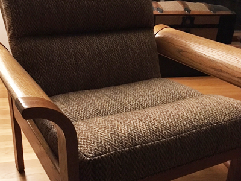
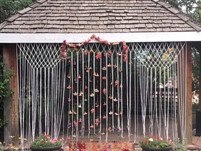

The vintage chairs from hell.
January 2018 - September 2018

January 2018 - September 2018
I found a love for used furniture after facing reality that new stuff is expensive. So I was pretty psyched when I came across two cool chairs at a moving sale that only kind of smelled like a smoking parlor. We had the upholstery professionally done but attempted to refinish the wood ourselves. After taking the chairs apart, we attempted to strip the old finish anywhere from 3-6 times per piece. That process was followed by sanding, staining and coating. While we love the new additions to our home, I think I'd pay a professional next time.
Macramé and Mona.
March 2017 - July 2017

March 2017 - July 2017
I decided I really wanted a macramé backdrop for our Colorado farm wedding. I found Mona on Craigslist, an older woman who was really into macramé in the 70s. I bought over 50 yards of cord from her for $25. She regaled me with stories of her various creations including — but not limited to — plant holders, wall decor, and even a hanging bed.